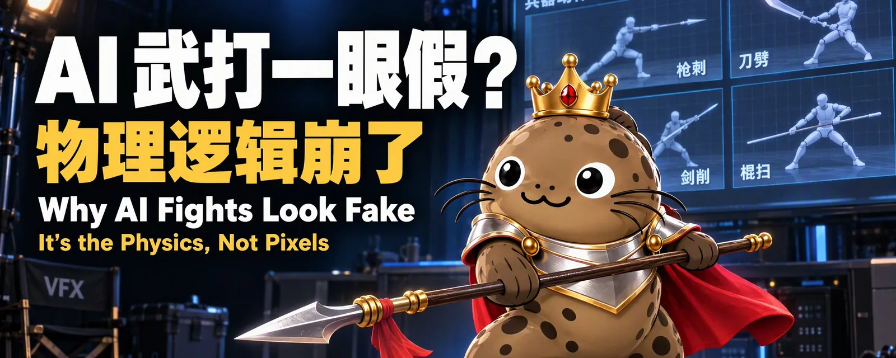
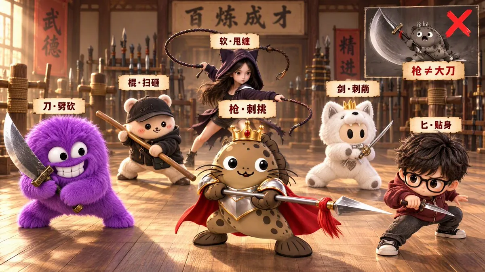
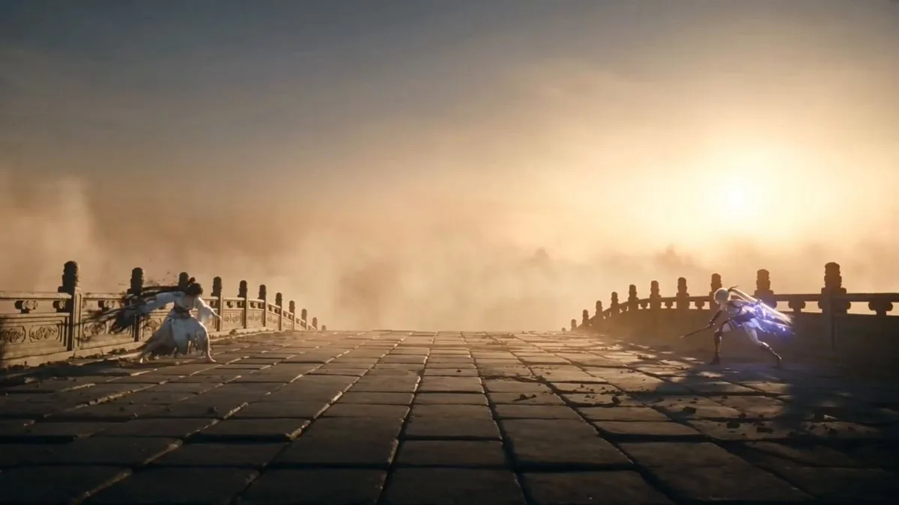

导读
老泥鳅自述是前影视从业者，现在做 AI 内容。这篇短长文只回答一个问题：AI 视频里的武打戏为什么一眼假？
他的回答是：不是画质问题，是物理逻辑和空间逻辑崩了。不管用 Seedance、Kling 还是 Veo，模型拿到一句“两人激烈打斗”，就会生成木偶互殴：拿枪当大刀劈、软鞭没有惯性、人物瞬移、一招打完不收势。他的办法是在写提示词之前先当一回武术指导，按一条不妥协的优先级排：剧情事实 > 武器力学 > 攻防因果 > 空间连续 > 人物设定 > 可生成性 > 镜头特效。镜头和特效排在最后。
正文分六步：先锁定战局变量，并让上一镜的收招状态接成下一镜的起手状态；按兵器限定动作库；每段打斗写成“起手 → 意图 → 攻击 → 反应 → 空档 → 反击 → 位移 → 收招 → 结尾”的因果链；用远、中、近三档距离安排兵器，禁止瞬移；每次攻击之后必须有恢复动作；镜头单独设计，只在真实动作节点切镜。最后给一个三段式输出模板和十条“避坑红线”。四天后作者引用本帖发了一条 30 秒的 Seedance 2.5 演示，并补了一句：基础学会之后，剩下的才是镜头衔接、特效渲染和表演。
要点
- 假的根源是物理，不是像素。武打戏的难点在力学和空间连续，画质再好也救不了。
- 优先级不能乱：剧情事实 > 武器力学 > 攻防因果 > 空间连续 > 人物设定 > 可生成性 > 镜头特效。不要为了炫技破坏武器结构、距离感和重心。
- 开打前锁变量：能力、体型、武器、目的、位置、距离、朝向、障碍、伤势、体力、优势方、总时长。
- 镜与镜之间交接状态：上一镜的 End State（位置、高度、朝向、武器在哪只手）就是下一镜的 Start State，全程维护。
- 武器决定动作：枪矛刺戳挑拨、不能当大刀劈；锤重击后要画恢复；软兵器要有惯性和回收；拳脚看支撑脚、腰胯和重心。
- 每招都要有战术目的（抢距离、封路线、逼退、制造空档、脱离），按因果链串起来，不堆孤立招式。
- 距离三档：远距离长枪和投射，中距离刀剑棍和拳腿，近距离短刀、肘膝和控制；换位必须拍出移动过程。
- 有打就得有收：回收、落地、换脚、回架、恢复重心、重新拉开距离。没有恢复动作就是假打。
- 镜头和动作分开设计：一镜到底用于换位、兵器轨迹和环境互动；快切用于近身爆发和打击反馈；只在真实动作节点切镜。
- 输出模板：【战局设定】→【武器力学】→【时间线推进】，每个时间段写目的、镜头、起手、意图、动作、反应、打击、收招、结尾、连续性和硬性锁定。
我们核实到的情况
| 文中说法 | 核实结果 |
|---|---|
| Seedance、Kling、Veo 都能生成 AI 视频，武打戏是共同难点 | 前半句属实。三者分别是字节跳动、快手、Google 的视频生成模型。“武打戏最难”是作者的经验判断，没有给评测数据。 |
| 作者 10-19 的演示用的是 “sd2.5” | 可信。字节 Seed 团队于 2026-07-31 发布 Seedance 2.5，官方写明单次最长生成 30 秒。演示视频时长约 30.1 秒，与此相符。视频是否一次生成、有没有后期剪辑，帖子没说，我们无法判断。 |
| 各兵器的动作库（枪刺戳挑拨、刀劈砍撩、剑刺点撩、棍扫戳挑……） | 与常见武术术语大体一致。例如传统枪法以拦、拿、扎为基本功，剑以刺、点、撩、劈为主要剑法。我们没有逐条对照武术套路教材；作者的分类是给 AI 写提示词用的简化版，不是武术规范。 |
| 上一镜收招状态必须接成下一镜起手状态 | 属于影视通行做法。对应剪辑里的动作衔接（match on action）和场记的连戏记录。它对 AI 视频尤其重要，因为模型分段生成时不会记住上一段的状态，参考本库 ComfyUI-H3-Motion-Context 用 latent 续接片段要解决的也是这个问题。 |
| “本泥鳅自己跑通了一套武打动作引擎框架” | 无法独立核实。文中没有公开完整提示词、模板文件或对照实验；能看到的只有 10-19 那条演示视频。 |
| 作者简介“前影视从业者” | 自述，无法核实。 |
| 传播数据 | 截至 2026-10-19 20:00（UTC+8）前后：约 2300 浏览、28 赞、24 收藏、3 引用、6 回复。3 条引用里 API 只返回了 2 条可见的（作者本人的演示和 @RJasonHA）。 |
推文全文
武打动作小技巧 [X 文章]
X 长文全文：AI 武打一眼假？不是画面不行，是物理逻辑崩了
Why AI Fights Look Fake: It's the Physics, Not the Pixels
AI 武打一眼假？不是画面不行，是物理逻辑崩了。
兄弟们，做 AI 视频（Seedance、Kling、Veo 都一样），最难的就是武打戏。
很多兄弟生成出来像木偶互殴，根本原因就一个：物理逻辑和空间逻辑崩了。
本泥鳅自己跑通了一套武打动作引擎框架，核心一句话：
先把动作搞对，再把打斗连起来，最后才是运镜好看。
我的核心顺序（绝不妥协）：
剧情事实 > 武器力学 > 攻防因果 > 空间连续 > 人物设定 > 可生成性 > 镜头特效
别为了炫技破坏武器结构、距离感和重心 —— 这是 AI 出片的大忌。
一、战局初始化：先定规矩
打斗前锁定这些变量：双方能力、体型、武器、目的、初始位置、距离、朝向、障碍、伤势、体力、优势方、总时长。
关键点：上一镜的收招状态（End State）必须无缝接成下一镜的起手状态（Start State）—— 位置、高度、朝向、武器在哪个手，全程维护，绝对不能乱。
二、兵器物理法则：武器决定动作
AI 不能凭空瞎编，每种兵器只有自己的动作库：
- 枪矛：刺、戳、点、挑、拨、架、压、扫杆 ——绝不能当大刀狂劈
- 刀：劈、砍、斩、削、撩、格、拖切
- 剑：刺、削、点、撩、格、压剑
- 棍：扫、砸、戳、挑、架、拨
- 锤：砸、抡、撞、压，重击后必须画恢复动作
- 匕首：刺、割、挑、贴身控制
- 软兵器：甩、抽、缠、套、拉，必须画出惯性和回收
- 拳脚肘膝：距离要对、支撑脚要稳、腰胯发力要顺、重心变化要准

三、攻防回合制：拒绝无效堆招
每段打斗都是一条完整因果链：起手 → 意图 → 攻击 → 对手反应 → 空档 → 反击 → 位移 → 收招 → 结尾。
每个动作必须有战术目的（抢距离、封路线、逼退、制造空档、脱离）。
最怕孤立招式乱堆，看着热闹，毫无逻辑。
四、距离与空间：换位必须有过程
第一回合就要建立位置、朝向、距离和动作轴线：
- 远距离：上长枪、投射
- 中距离：刀剑棍、拳腿
- 近距离：短刀、肘膝、控制
绝对禁止瞬移、突然换手、状态重置。 所有换位必须拍出移动过程。
五、打击与恢复：有打就得有收
命中反馈要符合工具逻辑：刀剑看刃线和避让，枪矛看枪尖路径和偏转，棍锤看惯性和身体位移，拳脚看头躯偏转和失衡。
最重要一条：攻击之后必须有收招—— 回收、落地、换脚、回架、恢复重心、重新建立距离。
没有恢复动作的打斗，就是假打。
六、镜头语言：镜头与动作分离
镜头必须含：景别、机位、运镜、方向、速度、跟焦主体。
- 一镜到底：用于空间换位、兵器轨迹、环境互动
- 快切：用于近身爆发、打击反馈、高密度交换
切镜只能依附真实动作节点，不能乱切。
📝 我的输出模板（直接抄）：
【战局设定】→【武器力学】→【时间线推进】（目的 + 镜头 + 起手 + 意图 + 动作 + 反应 + 打击 + 收招 + 结尾 + 连续性 + 硬性锁定）🚫 避坑红线（Hard Lock）：
武器功能错配 / 枪矛瞎挥砍 / 软兵器没惯性 / 拳脚没重心 / 腿法没支撑 / 投掷物数量变戏法 / 重武器连发无恢复 / 人物瞬移 / 孤立招式堆砌 / 无过程换手换位
最终原则：先物理合理，再动作连贯，最后镜头好看。顺序一乱，AI 打戏全是塑料味。
作者的演示与评论区
这次下血本
sd2.5 给大家演示一条
基础学会了之后，剩下才是镜头衔接和特效渲染以及表演！

评论区里作者补了两句方法论：读者 @YunTechX 说“本质是 Prompt 当导演，模型当特技演员……不懂镜头语言照样拍成烂片”，作者回“是这样的，所以必须得有导演思维和逻辑能力”；对方再说“人人都是导演，但大多在导重灾区”，作者回“是啊，但导演思维肯定是最基础要有的，其次就是审美和语言组织能力”。另一条引用来自 @RJasonHA：“老泥鳅又开始教授焚决了，什么时候做个视频露一手”，四天后的演示可以看作对这句话的回应。
相关页面
- AI 打斗的关键一击：冲击帧与闪帧提示词：本文管“打得对”，那篇管“打中那一下好不好看”，正好是作者说的“剩下的特效渲染”。
- 一个人用 AI 做 3D 武侠 ARPG：同样是武侠题材，游戏里的动作与兵器设定。
- ComfyUI-H3-Motion-Context：用 latent 续接片段，解决“上一镜 End State 接下一镜 Start State”的工程问题。
- MiniMax-H3 Prompt Rewriter 与 MiniMax H3 Director：把一句话扩写成分镜脚本，可以把本文的“时间线推进”模板放进去。
- Motion Prompt：把动画术语整理成喂给 AI 的动效库，和本文“兵器动作库”是同一种做法。
- OpenNana 提示词图库：收录 Seedance 等视频提示词案例。
对我们的启发
- 先约束，后美化。“剧情事实 > 武器力学 > … > 镜头特效”这种显式优先级，可以搬到任何生成任务里：先写不能违反的硬约束，再写风格。我们给 agent 写任务说明时也该这样排。
- 状态交接要写成字段。End State / Start State 的思路就是给每个片段写一份“交接单”（位置、朝向、手里拿什么）。分段生成视频、分步跑 agent，都会在交接处丢状态。
- 词表就是约束。给每种兵器限定动词，和给模型限定批准词、禁用词一样，比“动作要合理”这种泛泛要求好执行。
- “红线”清单适合做自检。十条避坑红线可以直接当生成后的检查表，逐条过一遍再决定重抽。
- 方法要配演示看。文章本身没有对照实验，四天后的 30 秒演示是唯一的效果证据；转述这类经验帖时，要把“作者自述”和“可见结果”分开写。